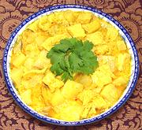

|
Potato Curry, SumatraIndonesia / California | ||||
| Serves: Effort: Sched: DoAhead: |
4 w/rice *** 1-1/4 hrs Yes |
Faced with serving a mixed couple (carni & veg), I modified my highly successful Chicken Curry, Sumatra so I could simultneously make a vegetarian version. vegetarian version - see Versions. | |||
|
9 3 2 4 ------ 4 4 3 3 4 ------ 2 ------ 1/4 10 1/3 2 1/4 2-1/2 1/2 2 ------ |
oz oz oz oz --- oz cl oz --- T --- in oz c t t t t --- |
Potatoes (1) Tofu,fried (2) Tofu Skins (3) King Trumpets (4) -- Paste Coconut Cream (5) Chilis dry (6) Garlic Onion Candlenuts (7) ---------- Oil -- Finish items Galangal Coconut Milk Water Coriander Seed Turmeric Salt Palm Sugar (8) Salam Leaf (9) -------------- |
Prep - (25 min)
|
smc_potcury1 110506 ajg - www.clovegarden.com
©Andrew Grygus
- ajg@aaxnet.com - Linking to and non-commercial use of this page
permitted.